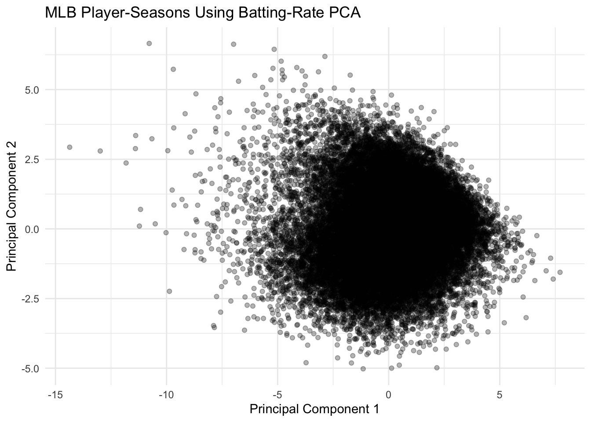
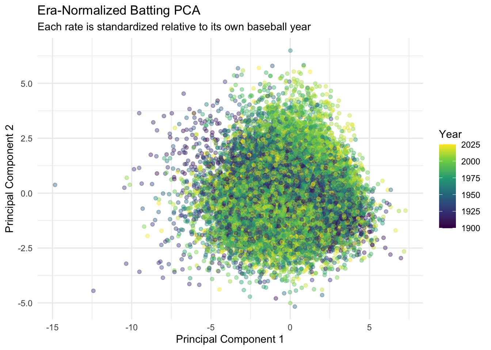
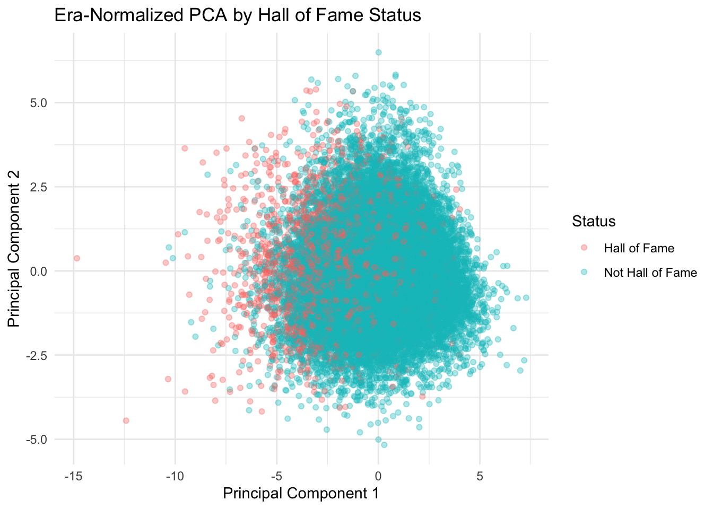
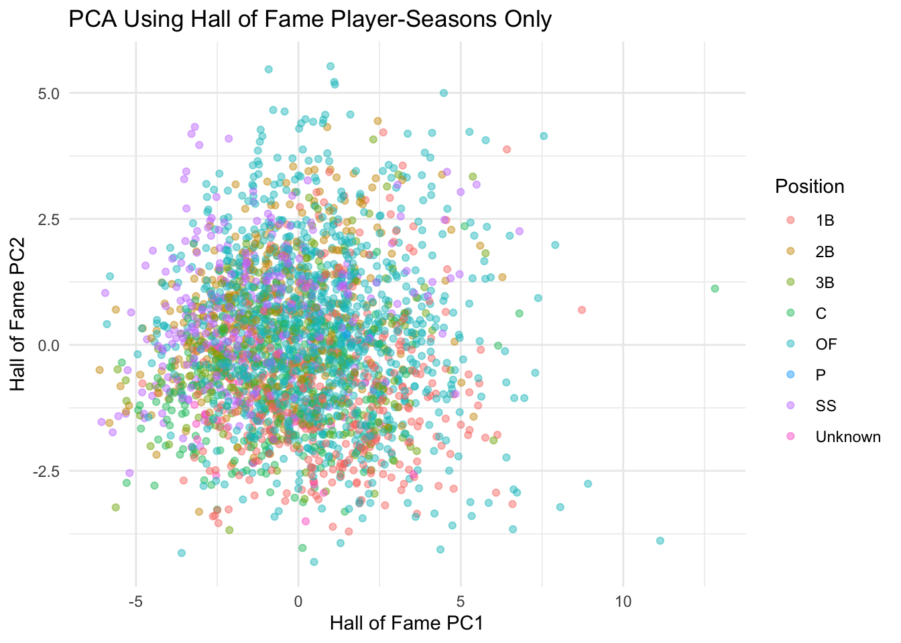
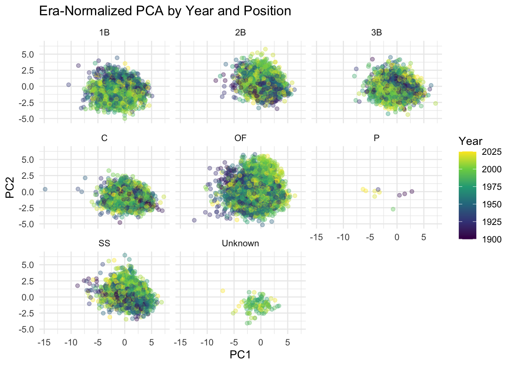
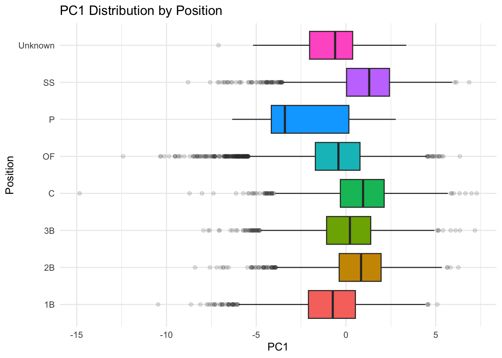
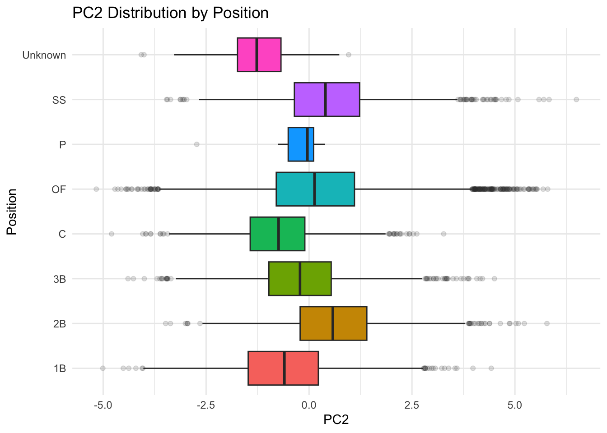
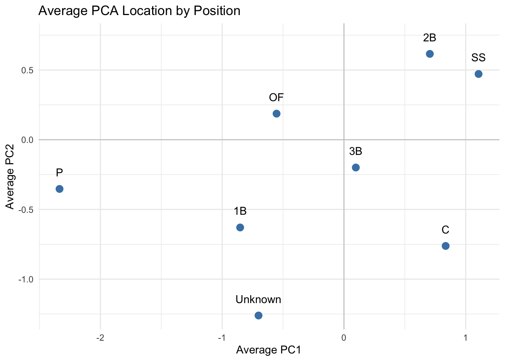
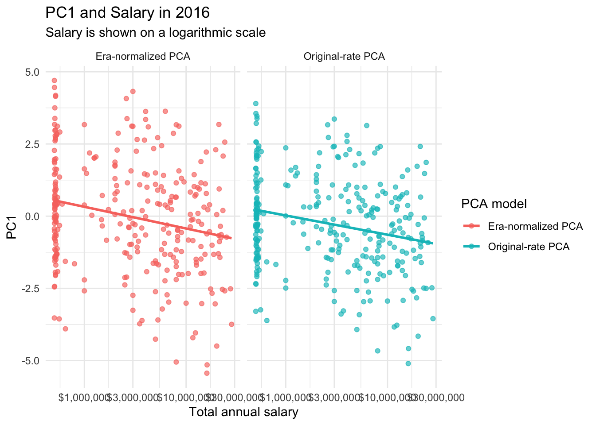

library(tidyverse)
library(Lahman)Principal Component Analysis with MLB Batting Data
A lesson using the Lahman baseball database
Lesson goals
In this lesson, we use Major League Baseball batting data to learn how principal component analysis (PCA) can summarize many related quantitative variables.
1. Baseball in simple terms
Baseball is a game between two teams. One team bats and tries to score runs; the other team fields and tries to record outs. A batter can reach base by getting a hit, receiving a walk, or being hit by a pitch. The batter and other runners advance around four bases. Reaching home plate scores a run.
An individual player-season is one player’s statistics for one year. The Lahman data may contain several rows for a player in the same year if the player changed teams. We combine those rows so each analysis row represents one player in one season.
2. Offensive statistics in simple terms
Counting statistics
Counting statistics record how many times an event happened. Examples include:
H: hitsHR: home runsR: runs scoredRBI: runs batted inBB: walksSB: stolen bases
Counting statistics are strongly affected by playing time. A player who plays 162 games usually has more hits than an equally productive player who plays 60 games.
Rate statistics
Rate statistics divide an event by an opportunity. They help us compare players who had different amounts of playing time.
BA(batting average) = hits divided by at-batsOBP(on-base percentage) = times reaching base divided by the selected denominatorSLG(slugging percentage) = total bases divided by at-batsHR_rate= home runs divided by plate appearances
PCA works well here with rates because we want to study how players produced, rather than simply how long they played.
PCA concepts: what PCA does
PCA is a way to replace many related variables with a smaller number of new variables called principal components.
Imagine that we measure a player using several batting rates. Many of those rates are correlated: players with high home-run rates may also have high slugging percentages and RBI rates. PCA looks for a new direction through the data that captures as much variation as possible.
A simple two-variable example
Suppose we measure only two characteristics:
- power: a player’s home-run tendency;
- contact: a player’s ability to get hits.
If these two variables tend to increase together, the first component might look approximately like:
\[ PC1 = 0.70(\text{power}) + 0.70(\text{contact}) \]
This component measures a general offensive dimension: players high in both variables receive high PC1 scores.
The second component might look approximately like:
\[ PC2 = 0.70(\text{power}) - 0.70(\text{contact}) \]
This component contrasts power with contact. A player with much more power than contact will score high on PC2, while a player with much more contact than power will score low on PC2.
The exact coefficients are calculated by PCA. The coefficients are called loadings, and the score for one player is found by multiplying the player’s standardized variables by those loadings and adding the results.
example_data <- tibble(
power = c(1, 2, 3, 4, 5),
contact = c(1.2, 2.1, 2.8, 4.2, 5.1)
)
example_pca <- prcomp(
example_data,
center = TRUE,
scale. = TRUE
)
example_pca$rotation PC1 PC2
power 0.7071068 -0.7071068
contact 0.7071068 0.7071068example_pca$x PC1 PC2
[1,] -1.7390831 0.049771236
[2,] -0.8875130 0.006914215
[3,] -0.1257998 -0.125799823
[4,] 0.9504129 0.055985697
[5,] 1.8019831 0.013128675# The two loading vectors are orthogonal.
sum(example_pca$rotation[, 1] * example_pca$rotation[, 2])[1] 0The final value is approximately zero. That is how we can see the orthogonality of the two component directions.
Why do we center and scale?
Centering subtracts the mean from every variable:
\[ x_{\text{centered}} = x - \bar{x} \]
After centering, each variable has an average of zero. PCA then describes how observations vary around the center of the data.
Scaling divides each centered variable by its standard deviation:
\[ x_{\text{scaled}} = \frac{x - \bar{x}}{\text{standard deviation}(x)} \]
After scaling, each variable has a standard deviation of one.
This matters because batting variables are measured on different scales. For example, BA is usually between 0 and 1, while HR_rate is much smaller and RBI_rate may have a different spread. Without scaling, a variable with the largest numerical spread could dominate PCA simply because of its units.
In this lesson, scale. = TRUE means that prcomp() centers and scales the original rates before calculating the components. Later, we create z-scores within each year. Those variables are already standardized within year, so we do not scale them a second time.
Why are the components orthogonal?
PCA chooses PC1 first, pointing in the direction that explains the most variation. PC2 is then chosen to explain as much of the remaining variation as possible while being perpendicular to PC1. Additional components continue this process.
Orthogonality means the components are uncorrelated in the data used to fit the PCA. It does not mean that the original batting statistics are unrelated. In fact, PCA is useful partly because the original variables are related.
Each component is a linear combination of all the variables included in the analysis:
\[ PC1 = w_1x_1 + w_2x_2 + \cdots + w_px_p \]
The rotation matrix shows the weights (w) or loadings. The x matrix in the PCA result contains each player-season’s coordinates, called scores, on those new axes.
3. Load the baseball data
The Lahman package contains historical Major League Baseball data. Install the packages once if they are not already installed.
# Install once if needed:
# install.packages(c("tidyverse", "Lahman"))
library(tidyverse)
library(Lahman)
glimpse(Batting)Rows: 128,598
Columns: 22
$ playerID <chr> "aardsda01", "aardsda01", "aardsda01", "aardsda01", "aardsda0…
$ yearID <int> 2004, 2006, 2007, 2008, 2009, 2010, 2012, 2013, 2015, 1954, 1…
$ stint <int> 1, 1, 1, 1, 1, 1, 1, 1, 1, 1, 1, 1, 1, 1, 1, 1, 1, 1, 1, 1, 1…
$ teamID <fct> SFN, CHN, CHA, BOS, SEA, SEA, NYA, NYN, ATL, ML1, ML1, ML1, M…
$ lgID <fct> NL, NL, AL, AL, AL, AL, AL, NL, NL, NL, NL, NL, NL, NL, NL, N…
$ G <int> 11, 45, 25, 47, 73, 53, 1, 43, 33, 122, 153, 153, 151, 153, 1…
$ AB <int> 0, 2, 0, 1, 0, 0, 0, 0, 1, 468, 602, 609, 615, 601, 629, 590,…
$ R <int> 0, 0, 0, 0, 0, 0, 0, 0, 0, 58, 105, 106, 118, 109, 116, 102, …
$ H <int> 0, 0, 0, 0, 0, 0, 0, 0, 0, 131, 189, 200, 198, 196, 223, 172,…
$ X2B <int> 0, 0, 0, 0, 0, 0, 0, 0, 0, 27, 37, 34, 27, 34, 46, 20, 39, 28…
$ X3B <int> 0, 0, 0, 0, 0, 0, 0, 0, 0, 6, 9, 14, 6, 4, 7, 11, 10, 6, 4, 2…
$ HR <int> 0, 0, 0, 0, 0, 0, 0, 0, 0, 13, 27, 26, 44, 30, 39, 40, 34, 45…
$ RBI <int> 0, 0, 0, 0, 0, 0, 0, 0, 0, 69, 106, 92, 132, 95, 123, 126, 12…
$ SB <int> 0, 0, 0, 0, 0, 0, 0, 0, 0, 2, 3, 2, 1, 4, 8, 16, 21, 15, 31, …
$ CS <int> 0, 0, 0, 0, 0, 0, 0, 0, 0, 2, 1, 4, 1, 1, 0, 7, 9, 7, 5, 4, 4…
$ BB <int> 0, 0, 0, 0, 0, 0, 0, 0, 0, 28, 49, 37, 57, 59, 51, 60, 56, 66…
$ SO <int> 0, 0, 0, 1, 0, 0, 0, 0, 1, 39, 61, 54, 58, 49, 54, 63, 64, 73…
$ IBB <int> 0, 0, 0, 0, 0, 0, 0, 0, 0, NA, 5, 6, 15, 16, 17, 13, 20, 14, …
$ HBP <int> 0, 0, 0, 0, 0, 0, 0, 0, 0, 3, 3, 2, 0, 1, 4, 2, 2, 3, 0, 0, 1…
$ SH <int> 0, 1, 0, 0, 0, 0, 0, 0, 0, 6, 7, 5, 0, 0, 0, 0, 1, 0, 0, 0, 0…
$ SF <int> 0, 0, 0, 0, 0, 0, 0, 0, 0, 4, 4, 7, 3, 3, 9, 12, 9, 6, 5, 2, …
$ GIDP <int> 0, 0, 0, 0, 0, 0, 0, 0, 0, 13, 20, 21, 13, 21, 19, 8, 16, 14,…4. Create one row per player-season
We identify the counting statistics that should be added when a player played for more than one team during the same year.
counting_variables <- c(
"G", "AB", "R", "H", "X2B", "X3B", "HR",
"RBI", "SB", "CS", "BB", "SO", "IBB",
"HBP", "SH", "SF", "GIDP"
)
batting_season <- Batting |>
filter(yearID >= 1900) |>
group_by(playerID, yearID) |>
summarize(
across(
all_of(counting_variables),
~ sum(.x, na.rm = TRUE)
),
.groups = "drop"
) |>
filter(AB >= 200)The AB >= 200 filter gives us players with a substantial number of at-bats. It reduces the chance that a few plate appearances create extreme rates.
5. Add player position
Batting does not contain a simple primary-position variable. The Fielding table records positions, so we select the position with the most fielding appearances for each player-season.
player_position <- Fielding |>
filter(yearID >= 1900) |>
group_by(playerID, yearID, POS) |>
summarize(
fielding_games = sum(G, na.rm = TRUE),
.groups = "drop"
) |>
group_by(playerID, yearID) |>
slice_max(fielding_games, n = 1, with_ties = FALSE) |>
ungroup() |>
transmute(
playerID,
yearID,
Position = POS
)
batting_season <- batting_season |>
left_join(player_position, by = c("playerID", "yearID")) |>
mutate(Position = replace_na(Position, "Unknown"))Some players may have multiple positions or no recorded fielding position. This lesson assigns the position with the most fielding appearances.
6. Create plate appearances and batting rates
We use this approximation for plate appearances:
\[ PA = AB + BB + HBP + SH + SF \]
We calculate traditional rates and event rates per plate appearance.
batting_season <- batting_season |>
mutate(
PA = AB + BB + HBP + SH + SF,
# Traditional rates
BA = H / AB,
OBP = (H + BB + HBP) / (AB + BB + HBP + SF),
SLG = (H + X2B + 2 * X3B + 3 * HR) / AB,
# Uncomment if you want OPS in the analysis.
# OPS = OBP + SLG,
# Event rates per plate appearance
R_rate = R / PA,
X2B_rate = X2B / PA,
X3B_rate = X3B / PA,
HR_rate = HR / PA,
RBI_rate = RBI / PA,
SB_rate = SB / PA,
BB_rate = BB / PA,
SO_rate = SO / PA
# Optional variables. Add a comma after SO_rate if enabling these:
# ,CS_rate = CS / PA
# ,IBB_rate = IBB / PA
# ,HBP_rate = HBP / PA
# ,SH_rate = SH / PA
# ,SF_rate = SF / PA
# ,GIDP_rate = GIDP / PA
) |>
filter(if_all(where(is.numeric), is.finite))The commented-out variables are optional choices. PCA is affected by which variables we include, so those choices should be documented.
7. Choose the variables for PCA
We carry along identifying variables separately. They identify players and help us interpret PCA results, but they are not used to calculate the components.
rate_variable_names <- c(
"BA", "OBP", "SLG",
"R_rate", "X2B_rate", "X3B_rate",
"HR_rate", "RBI_rate", "SB_rate",
"BB_rate", "SO_rate"
)
analysis_data <- batting_season |>
left_join(
People |>
transmute(
playerID,
player_name = paste(nameFirst, nameLast)
),
by = "playerID"
) |>
select(
any_of(c("playerID", "player_name", "yearID", "Position")),
all_of(rate_variable_names)
)
analysis_data |>
select(any_of(c("playerID", "player_name", "yearID", "Position"))) |>
slice_head(n = 10)# A tibble: 10 × 4
playerID player_name yearID Position
<chr> <chr> <int> <chr>
1 aaronha01 Hank Aaron 1954 OF
2 aaronha01 Hank Aaron 1955 OF
3 aaronha01 Hank Aaron 1956 OF
4 aaronha01 Hank Aaron 1957 OF
5 aaronha01 Hank Aaron 1958 OF
6 aaronha01 Hank Aaron 1959 OF
7 aaronha01 Hank Aaron 1960 OF
8 aaronha01 Hank Aaron 1961 OF
9 aaronha01 Hank Aaron 1962 OF
10 aaronha01 Hank Aaron 1963 OF 8. Run PCA using the original rates
PCA finds new axes that are weighted combinations of the original variables. PC1 explains the greatest amount of variation; PC2 explains the greatest remaining amount, subject to being perpendicular to PC1.
Because the variables use different scales, we center and standardize them inside prcomp().
rate_variables <- analysis_data |>
select(all_of(rate_variable_names)) |>
select(where(~ sd(.x, na.rm = TRUE) > 0))
pc_rates <- prcomp(
rate_variables,
center = TRUE,
scale. = TRUE
)
summary(pc_rates)Importance of components:
PC1 PC2 PC3 PC4 PC5 PC6 PC7
Standard deviation 2.0642 1.5199 1.1213 1.01129 0.86827 0.73684 0.59132
Proportion of Variance 0.3874 0.2100 0.1143 0.09297 0.06854 0.04936 0.03179
Cumulative Proportion 0.3874 0.5974 0.7117 0.80465 0.87318 0.92254 0.95432
PC8 PC9 PC10 PC11
Standard deviation 0.57098 0.40805 0.09471 0.03063
Proportion of Variance 0.02964 0.01514 0.00082 0.00009
Cumulative Proportion 0.98396 0.99910 0.99991 1.00000pc_rates$rotation PC1 PC2 PC3 PC4 PC5
BA -0.364528143 0.31682384 0.19944583 0.147197939 -0.10103338
OBP -0.399504021 0.20979697 -0.28619449 0.263342478 -0.09616591
SLG -0.462367628 -0.10409222 0.11947966 -0.094682136 0.09285574
R_rate -0.370013245 0.16862072 -0.15779004 -0.278954400 -0.04445971
X2B_rate -0.272960370 -0.04581444 0.41820473 0.039188906 -0.64674322
X3B_rate -0.066499742 0.44428403 0.13320217 -0.265185892 0.53414153
HR_rate -0.312698193 -0.43738773 -0.02968407 -0.189958807 0.21801291
RBI_rate -0.370563027 -0.19962312 0.21725053 0.001057321 0.34230012
SB_rate 0.003463371 0.36522503 -0.24488409 -0.654352565 -0.28614812
BB_rate -0.206549572 -0.06354534 -0.72024834 0.275232631 -0.02276290
SO_rate -0.010987623 -0.49826473 -0.14035009 -0.458615490 -0.13879354
PC6 PC7 PC8 PC9 PC10
BA 0.20358960 0.016554557 -0.54166755 0.09036120 0.5116439393
OBP -0.03362575 -0.088528540 -0.29564596 0.06640179 -0.7303425251
SLG 0.01322692 -0.003830122 -0.12761343 -0.38261668 0.1040256133
R_rate 0.11099853 0.713497050 0.34670136 0.29698184 0.0129366183
X2B_rate -0.43549678 -0.109659334 0.31466486 -0.09149039 -0.0230071597
X3B_rate -0.62734815 -0.034765513 -0.01134825 -0.10092358 -0.0177815537
HR_rate 0.18877869 0.041718220 0.05166548 -0.52787834 -0.0919969818
RBI_rate 0.16558848 -0.477241027 0.29077983 0.56456440 -0.0005748871
SB_rate 0.27934668 -0.450288912 0.07489265 -0.10078107 0.0030496350
BB_rate -0.30437737 -0.188263055 0.20801731 -0.04420419 0.4292808238
SO_rate -0.35772158 0.043123482 -0.49745112 0.35323720 0.0151979264
PC11
BA -0.3000284934
OBP -0.0411510311
SLG 0.7548688873
R_rate 0.0011019536
X2B_rate -0.1381647867
X3B_rate -0.1393235496
HR_rate -0.5470380101
RBI_rate -0.0007897309
SB_rate -0.0016531460
BB_rate -0.0259738575
SO_rate 0.0056658986The rotation table contains the loadings. A large positive loading means the variable contributes positively to a component. A large negative loading means it contributes in the opposite direction. The sign of a PCA component is arbitrary: multiplying an entire component by -1 describes the same pattern.
rate_scores <- as_tibble(pc_rates$x) |>
bind_cols(
analysis_data |>
select(any_of(c("playerID", "player_name", "yearID", "Position")))
)
rate_scores |>
select(any_of(c("player_name", "yearID", "Position", "PC1", "PC2"))) |>
slice_head(n = 10)# A tibble: 10 × 5
player_name yearID Position PC1 PC2
<chr> <int> <chr> <dbl> <dbl>
1 Hank Aaron 1954 OF -0.619 0.147
2 Hank Aaron 1955 OF -3.23 0.273
3 Hank Aaron 1956 OF -3.17 1.15
4 Hank Aaron 1957 OF -4.51 -0.711
5 Hank Aaron 1958 OF -3.50 0.112
6 Hank Aaron 1959 OF -5.33 0.205
7 Hank Aaron 1960 OF -3.23 -0.127
8 Hank Aaron 1961 OF -4.49 0.648
9 Hank Aaron 1962 OF -5.08 -0.417
10 Hank Aaron 1963 OF -4.38 -0.338ggplot(rate_scores, aes(PC1, PC2)) +
geom_point(alpha = 0.30) +
theme_minimal() +
labs(
title = "MLB Player-Seasons Using Batting-Rate PCA",
x = "Principal Component 1",
y = "Principal Component 2"
)
9. Normalize rates within each baseball year
Baseball changes over time. Rules, equipment, training, ballparks, player populations, and strategies can all change. A batting average or home-run rate from 1920 should not automatically be compared with the same raw rate from 2000.
To compare players with the players of their own era, we calculate a z-score within each year:
\[ z = \frac{\text{player rate} - \text{year average}}{\text{year standard deviation}} \]
A value of 2 means the player was about two within-year standard deviations above that year’s average for that statistic.
within_year_z <- function(x) {
x_mean <- mean(x, na.rm = TRUE)
x_sd <- sd(x, na.rm = TRUE)
if (is.na(x_sd) || x_sd == 0) {
rep(0, length(x))
} else {
(x - x_mean) / x_sd
}
}
z_rate_data <- analysis_data |>
group_by(yearID) |>
mutate(
across(
all_of(rate_variable_names),
within_year_z,
.names = "z_{.col}"
)
) |>
ungroup()
z_rate_variable_names <- paste0("z_", rate_variable_names)
z_rate_variables <- z_rate_data |>
select(all_of(z_rate_variable_names)) |>
select(where(~ sd(.x, na.rm = TRUE) > 0))
pc_z_rates <- prcomp(
z_rate_variables,
center = TRUE,
scale. = FALSE
)
summary(pc_z_rates)Importance of components:
PC1 PC2 PC3 PC4 PC5 PC6 PC7
Standard deviation 2.0552 1.3743 1.1560 1.0772 0.83556 0.82239 0.62419
Proportion of Variance 0.3856 0.1724 0.1220 0.1059 0.06374 0.06175 0.03557
Cumulative Proportion 0.3856 0.5581 0.6801 0.7861 0.84979 0.91154 0.94711
PC8 PC9 PC10 PC11
Standard deviation 0.60016 0.43764 0.12538 0.10863
Proportion of Variance 0.03289 0.01749 0.00144 0.00108
Cumulative Proportion 0.98000 0.99749 0.99892 1.00000pc_z_rates$rotation PC1 PC2 PC3 PC4 PC5
z_BA -0.37343978 0.29309698 0.24127051 0.14299043 -0.06707571
z_OBP -0.40364555 0.17100586 -0.22716718 0.32773621 0.01027441
z_SLG -0.46446750 -0.10445191 0.11133682 -0.11275375 -0.06234549
z_R_rate -0.36381304 0.20206642 -0.21264782 -0.16381956 0.03663589
z_X2B_rate -0.24643434 0.03198150 0.45298637 0.06673112 0.74836275
z_X3B_rate -0.09295020 0.35609033 0.01769139 -0.56610180 -0.26836057
z_HR_rate -0.33645216 -0.42113965 -0.04318303 -0.19594241 -0.19268878
z_RBI_rate -0.35173205 -0.32456810 0.19383345 -0.09650819 -0.23478425
z_SB_rate -0.04557571 0.47043816 -0.28848311 -0.35096999 0.25396389
z_BB_rate -0.20252024 -0.07601174 -0.64281137 0.35953443 0.08990135
z_SO_rate 0.01209550 -0.44214712 -0.30198319 -0.45553920 0.43962417
PC6 PC7 PC8 PC9 PC10
z_BA -0.009377300 -0.58741912 -0.053507997 -0.000244841 0.19383299
z_OBP -0.177558540 -0.25309372 -0.126852061 0.008248796 0.20505317
z_SLG 0.001360718 -0.05128339 -0.002793484 0.312380181 -0.80039075
z_R_rate 0.235395359 0.14468854 0.737677228 -0.363833183 0.02134272
z_X2B_rate -0.172163140 0.34317904 -0.010558146 0.056389666 0.13344298
z_X3B_rate -0.643714275 0.19498083 -0.064482412 0.045390466 0.11460772
z_HR_rate 0.233132784 0.14848905 0.059051330 0.555901284 0.49166980
z_RBI_rate 0.122577357 0.19176115 -0.437489569 -0.651179588 0.04097202
z_SB_rate 0.530422403 0.05994705 -0.460808082 0.091107255 -0.01113762
z_BB_rate -0.281249695 0.31515750 -0.159266195 0.009539249 -0.06865913
z_SO_rate -0.197834702 -0.49978893 0.002550206 -0.152588413 0.01015505
PC11
z_BA 0.553079082
z_OBP -0.703502659
z_SLG -0.059305266
z_R_rate 0.008219706
z_X2B_rate 0.006363375
z_X3B_rate 0.004417356
z_HR_rate 0.037440472
z_RBI_rate -0.004795738
z_SB_rate -0.000667107
z_BB_rate 0.440519708
z_SO_rate 0.007746447z_rate_scores <- as_tibble(pc_z_rates$x) |>
bind_cols(
z_rate_data |>
select(any_of(c("playerID", "player_name", "yearID", "Position")))
)Because the rates have already been standardized within year, we do not scale them again. We still center the columns overall before calculating PCA.
ggplot(z_rate_scores, aes(PC1, PC2, color = yearID)) +
geom_point(alpha = 0.40) +
scale_color_viridis_c() +
theme_minimal() +
labs(
title = "Era-Normalized Batting PCA",
subtitle = "Each rate is standardized relative to its own baseball year",
x = "Principal Component 1",
y = "Principal Component 2",
color = "Year"
)
10. Add Hall of Fame status
Hall of Fame status is not used as an input to PCA. It is a label used to examine whether Hall of Fame players occupy different parts of PCA space.
hof_players <- HallOfFame |>
filter(inducted == "Y") |>
distinct(playerID)
z_rate_scores <- z_rate_scores |>
mutate(
HOF = if_else(
playerID %in% hof_players$playerID,
"Hall of Fame",
"Not Hall of Fame"
)
)
table(z_rate_scores$HOF)
Hall of Fame Not Hall of Fame
2705 26399 ggplot(z_rate_scores, aes(PC1, PC2, color = HOF)) +
geom_point(alpha = 0.35) +
theme_minimal() +
labs(
title = "Era-Normalized PCA by Hall of Fame Status",
x = "Principal Component 1",
y = "Principal Component 2",
color = "Status"
)
Optional: run a separate PCA using Hall of Fame player-seasons
This is different from coloring the same PCA by Hall of Fame status. The PCA below is calculated using only Hall of Fame players, so its axes should not be directly compared with the all-player axes.
hof_z_data <- z_rate_data |>
filter(playerID %in% hof_players$playerID)
hof_z_variables <- hof_z_data |>
select(all_of(z_rate_variable_names)) |>
select(where(~ sd(.x, na.rm = TRUE) > 0))
pc_hof <- prcomp(
hof_z_variables,
center = TRUE,
scale. = FALSE
)
summary(pc_hof)Importance of components:
PC1 PC2 PC3 PC4 PC5 PC6 PC7
Standard deviation 2.329 1.5437 1.2888 1.09030 0.86991 0.82182 0.64783
Proportion of Variance 0.414 0.1819 0.1268 0.09075 0.05777 0.05156 0.03204
Cumulative Proportion 0.414 0.5959 0.7227 0.81345 0.87121 0.92277 0.95481
PC8 PC9 PC10 PC11
Standard deviation 0.59114 0.45717 0.15303 0.10075
Proportion of Variance 0.02668 0.01596 0.00179 0.00077
Cumulative Proportion 0.98148 0.99744 0.99923 1.00000pc_hof$rotation PC1 PC2 PC3 PC4 PC5
z_BA 0.31629518 0.31067972 0.16165856 0.25551698 0.06863211
z_OBP 0.36010704 0.18532083 -0.28883191 0.29088019 0.14384009
z_SLG 0.47253415 -0.05722149 0.12966064 -0.04087609 0.02486871
z_R_rate 0.35432417 0.21844619 -0.12947687 -0.14615000 -0.03274795
z_X2B_rate 0.21283963 0.13633211 0.37242393 0.26588011 -0.43282192
z_X3B_rate 0.10834103 0.33044056 0.29353151 -0.39300243 0.70428061
z_HR_rate 0.41110451 -0.41597181 0.01209666 -0.25960504 -0.09121968
z_RBI_rate 0.37543775 -0.26047305 0.25288435 -0.05495944 -0.10215136
z_SB_rate 0.04557727 0.54749716 -0.26481302 -0.52926190 -0.48739527
z_BB_rate 0.22390536 -0.08242685 -0.69303251 0.19985304 0.18201773
z_SO_rate 0.04728991 -0.37807112 -0.13224733 -0.45983829 -0.01105703
PC6 PC7 PC8 PC9 PC10
z_BA -0.08130775 0.498827416 -0.332444156 -0.024680657 -0.28501869
z_OBP 0.06584617 0.134350708 -0.248819379 -0.006952859 -0.09072298
z_SLG -0.02982980 0.079782933 -0.013787403 -0.263095403 0.82007848
z_R_rate -0.06653014 0.218372073 0.708792477 0.481550599 -0.03276031
z_X2B_rate 0.64207383 -0.262747312 0.167557003 -0.114295472 -0.12906493
z_X3B_rate 0.20476816 -0.281055731 0.007799527 -0.085520217 -0.11777414
z_HR_rate -0.24561782 -0.004190538 0.186325216 -0.531412514 -0.44919586
z_RBI_rate -0.24415350 -0.416253992 -0.370767371 0.582671508 -0.06241124
z_SB_rate -0.09649135 -0.145127894 -0.258863243 -0.112816659 0.01125955
z_BB_rate 0.22269419 -0.402082667 -0.002809005 -0.032431006 -0.02077073
z_SO_rate 0.59220446 0.418358005 -0.240110705 0.205354510 -0.01315101
PC11
z_BA -0.509410483
z_OBP 0.744767121
z_SLG -0.071713783
z_R_rate -0.008690025
z_X2B_rate 0.017166912
z_X3B_rate 0.016757317
z_HR_rate 0.053473923
z_RBI_rate -0.006807458
z_SB_rate -0.011580082
z_BB_rate -0.420656862
z_SO_rate -0.006075068hof_scores <- as_tibble(pc_hof$x) |>
bind_cols(
hof_z_data |>
select(any_of(c("playerID", "player_name", "yearID", "Position")))
)
ggplot(hof_scores, aes(PC1, PC2, color = Position)) +
geom_point(alpha = 0.45) +
theme_minimal() +
labs(
title = "PCA Using Hall of Fame Player-Seasons Only",
x = "Hall of Fame PC1",
y = "Hall of Fame PC2",
color = "Position"
)
11. Compare PC1 and PC2 by year and position
The following charts show how the PCA space changes over time and how different positions are distributed in that space.
ggplot(z_rate_scores, aes(PC1, PC2, color = yearID)) +
geom_point(alpha = 0.35) +
facet_wrap(~ Position) +
scale_color_viridis_c() +
theme_minimal() +
labs(
title = "Era-Normalized PCA by Year and Position",
x = "PC1",
y = "PC2",
color = "Year"
)
ggplot(z_rate_scores, aes(x = Position, y = PC1, fill = Position)) +
geom_boxplot(show.legend = FALSE, outlier.alpha = 0.15) +
coord_flip() +
theme_minimal() +
labs(
title = "PC1 Distribution by Position",
x = "Position",
y = "PC1"
)
ggplot(z_rate_scores, aes(x = Position, y = PC2, fill = Position)) +
geom_boxplot(show.legend = FALSE, outlier.alpha = 0.15) +
coord_flip() +
theme_minimal() +
labs(
title = "PC2 Distribution by Position",
x = "Position",
y = "PC2"
)
Position centers in PCA space
This plot shows the average PC1 and PC2 score for each position. It is a summary; it does not mean every player at that position is similar.
position_centers <- z_rate_scores |>
group_by(Position) |>
summarize(
mean_PC1 = mean(PC1, na.rm = TRUE),
mean_PC2 = mean(PC2, na.rm = TRUE),
n = n(),
.groups = "drop"
)
ggplot(position_centers, aes(mean_PC1, mean_PC2, label = Position)) +
geom_hline(yintercept = 0, color = "gray80") +
geom_vline(xintercept = 0, color = "gray80") +
geom_point(size = 3, color = "steelblue") +
geom_text(nudge_y = 0.12, check_overlap = TRUE) +
theme_minimal() +
labs(
title = "Average PCA Location by Position",
x = "Average PC1",
y = "Average PC2"
)
12. Find extreme and near-zero player-seasons
The largest PC score is not automatically the best player. It means that the player-season has a strong positive value on that component. We need the loadings to understand what the component represents.
Here, closest to zero means closest to zero on one component. It does not mean the player was average in every individual statistic.
get_pc_examples <- function(data, component, n = 20) {
scores <- data |>
select(
any_of(c("playerID", "player_name", "yearID", "Position", "HOF")),
all_of(component)
) |>
rename(score = all_of(component))
list(
highest = scores |>
arrange(desc(score)) |>
slice_head(n = n) |>
mutate(category = "Highest"),
lowest = scores |>
arrange(score) |>
slice_head(n = n) |>
mutate(category = "Lowest"),
closest_to_zero = scores |>
mutate(distance_from_zero = abs(score)) |>
arrange(distance_from_zero) |>
slice_head(n = n) |>
select(-distance_from_zero) |>
mutate(category = "Closest to zero")
)
}
pc1_examples <- get_pc_examples(z_rate_scores, "PC1", n = 20)
pc2_examples <- get_pc_examples(z_rate_scores, "PC2", n = 20)
all_pc_examples <- bind_rows(
pc1_examples$highest |> mutate(component = "PC1"),
pc1_examples$lowest |> mutate(component = "PC1"),
pc1_examples$closest_to_zero |> mutate(component = "PC1"),
pc2_examples$highest |> mutate(component = "PC2"),
pc2_examples$lowest |> mutate(component = "PC2"),
pc2_examples$closest_to_zero |> mutate(component = "PC2")
) |>
select(
component,
category,
any_of(c("player_name", "playerID", "yearID", "Position", "HOF")),
score
)
all_pc_examples# A tibble: 120 × 8
component category player_name playerID yearID Position HOF score
<chr> <chr> <chr> <chr> <int> <chr> <chr> <dbl>
1 PC1 Highest Jose Molina molinjo01 2014 C Not Hall o… 7.28
2 PC1 Highest Brandon Wood woodbr01 2010 3B Not Hall o… 7.18
3 PC1 Highest Bill Bergen bergebi01 1911 C Not Hall o… 6.99
4 PC1 Highest Tony Peña penato02 2008 SS Not Hall o… 6.86
5 PC1 Highest Jeff Mathis mathije01 2019 C Not Hall o… 6.65
6 PC1 Highest Bob Ramazzotti ramazbo01 1949 3B Not Hall o… 6.35
7 PC1 Highest Lewis Brinson brinsle01 2019 OF Not Hall o… 6.34
8 PC1 Highest Bill Bergen bergebi01 1909 C Not Hall o… 6.33
9 PC1 Highest Hughie Critz critzhu01 1935 2B Not Hall o… 6.26
10 PC1 Highest Tim Anderson anderti01 2024 SS Not Hall o… 6.15
# ℹ 110 more rowsFor example, the six individual tables are available as follows:
pc1_examples$highest# A tibble: 20 × 7
playerID player_name yearID Position HOF score category
<chr> <chr> <int> <chr> <chr> <dbl> <chr>
1 molinjo01 Jose Molina 2014 C Not Hall of Fame 7.28 Highest
2 woodbr01 Brandon Wood 2010 3B Not Hall of Fame 7.18 Highest
3 bergebi01 Bill Bergen 1911 C Not Hall of Fame 6.99 Highest
4 penato02 Tony Peña 2008 SS Not Hall of Fame 6.86 Highest
5 mathije01 Jeff Mathis 2019 C Not Hall of Fame 6.65 Highest
6 ramazbo01 Bob Ramazzotti 1949 3B Not Hall of Fame 6.35 Highest
7 brinsle01 Lewis Brinson 2019 OF Not Hall of Fame 6.34 Highest
8 bergebi01 Bill Bergen 1909 C Not Hall of Fame 6.33 Highest
9 critzhu01 Hughie Critz 1935 2B Not Hall of Fame 6.26 Highest
10 anderti01 Tim Anderson 2024 SS Not Hall of Fame 6.15 Highest
11 riosma01 Matías Ríos 1915 3B Not Hall of Fame 6.10 Highest
12 stephja02 Jake Stephens 1928 SS Not Hall of Fame 6.05 Highest
13 bergebi01 Bill Bergen 1910 C Not Hall of Fame 6.00 Highest
14 flynndo01 Doug Flynn 1977 SS Not Hall of Fame 5.91 Highest
15 bergebi01 Bill Bergen 1906 C Not Hall of Fame 5.89 Highest
16 brignre01 Reid Brignac 2011 SS Not Hall of Fame 5.88 Highest
17 berrera01 Ray Berres 1940 C Not Hall of Fame 5.84 Highest
18 vukovjo01 John Vukovich 1971 3B Not Hall of Fame 5.83 Highest
19 saladty01 Tyler Saladino 2017 2B Not Hall of Fame 5.82 Highest
20 salazan01 Angel Salazar 1987 SS Not Hall of Fame 5.72 Highest pc1_examples$lowest# A tibble: 20 × 7
playerID player_name yearID Position HOF score category
<chr> <chr> <int> <chr> <chr> <dbl> <chr>
1 gibsojo99 Josh Gibson 1943 C Hall of Fame -14.8 Lowest
2 ruthba01 Babe Ruth 1920 OF Hall of Fame -12.4 Lowest
3 suttlmu99 Mule Suttles 1926 1B Hall of Fame -10.5 Lowest
4 ruthba01 Babe Ruth 1921 OF Hall of Fame -10.3 Lowest
5 bondsba01 Barry Bonds 2004 OF Not Hall of Fame -10.3 Lowest
6 bondsba01 Barry Bonds 2002 OF Not Hall of Fame -10.1 Lowest
7 charlos99 Oscar Charleston 1924 OF Hall of Fame -9.86 Lowest
8 smithch12 Charlie Smith 1929 OF Not Hall of Fame -9.53 Lowest
9 charlos99 Oscar Charleston 1921 OF Hall of Fame -9.53 Lowest
10 ruthba01 Babe Ruth 1919 OF Hall of Fame -9.51 Lowest
11 charlos99 Oscar Charleston 1925 OF Hall of Fame -9.37 Lowest
12 willite01 Ted Williams 1941 OF Hall of Fame -9.31 Lowest
13 bondsba01 Barry Bonds 2001 OF Not Hall of Fame -9.21 Lowest
14 judgeaa01 Aaron Judge 2024 OF Not Hall of Fame -9.00 Lowest
15 wagneho01 Honus Wagner 1908 SS Hall of Fame -8.80 Lowest
16 gibsojo99 Josh Gibson 1933 C Hall of Fame -8.72 Lowest
17 ruthba01 Babe Ruth 1923 OF Hall of Fame -8.69 Lowest
18 taylobe99 Ben Taylor 1914 1B Hall of Fame -8.64 Lowest
19 willite01 Ted Williams 1942 OF Hall of Fame -8.52 Lowest
20 willite01 Ted Williams 1957 OF Hall of Fame -8.49 Lowest pc1_examples$closest_to_zero# A tibble: 20 × 7
playerID player_name yearID Position HOF score category
<chr> <chr> <int> <chr> <chr> <dbl> <chr>
1 andruel01 Elvis Andrus 2022 SS Not Hall of Fame 8.23e-5 Closest…
2 sveumda01 Dale Sveum 1991 SS Not Hall of Fame -1.86e-4 Closest…
3 gilbebi02 Billy Gilbert 1904 2B Not Hall of Fame -2.33e-4 Closest…
4 spikech01 Charlie Spikes 1973 OF Not Hall of Fame -2.62e-4 Closest…
5 lawtoma02 Matt Lawton 2003 OF Not Hall of Fame -4.16e-4 Closest…
6 marteke01 Ketel Marte 2015 SS Not Hall of Fame -4.31e-4 Closest…
7 judgejo01 Joe Judge 1921 1B Not Hall of Fame 4.32e-4 Closest…
8 hemslro01 Rollie Hemsley 1934 C Not Hall of Fame -4.74e-4 Closest…
9 fernato01 Tony Fernandez 1985 SS Not Hall of Fame 4.85e-4 Closest…
10 erstada01 Darin Erstad 2004 1B Not Hall of Fame -7.50e-4 Closest…
11 doolami01 Mickey Doolin 1905 SS Not Hall of Fame 8.88e-4 Closest…
12 dusaker01 Erv Dusak 1946 OF Not Hall of Fame 9.94e-4 Closest…
13 hernaya01 Yadiel Hernandez 2022 OF Not Hall of Fame -1.13e-3 Closest…
14 rossco01 Cody Ross 2010 OF Not Hall of Fame 1.13e-3 Closest…
15 ibanera01 Raul Ibanez 2011 OF Not Hall of Fame 1.15e-3 Closest…
16 kempst01 Steve Kemp 1983 OF Not Hall of Fame 1.31e-3 Closest…
17 hairssc01 Scott Hairston 2009 OF Not Hall of Fame 1.39e-3 Closest…
18 garcilu04 Luis Garcia 2025 2B Not Hall of Fame -1.39e-3 Closest…
19 lawva01 Vance Law 1987 2B Not Hall of Fame -1.65e-3 Closest…
20 counscr01 Craig Counsell 2009 2B Not Hall of Fame 1.66e-3 Closest…pc2_examples$highest# A tibble: 20 × 7
playerID player_name yearID Position HOF score category
<chr> <chr> <int> <chr> <chr> <dbl> <chr>
1 willsma01 Maury Wills 1962 SS Not Hall of Fame 6.49 Highest
2 willsma01 Maury Wills 1965 SS Not Hall of Fame 5.83 Highest
3 miltohe01 Henry Milton 1937 OF Not Hall of Fame 5.80 Highest
4 gordode01 Dee Strange-Gordon 2017 2B Not Hall of Fame 5.78 Highest
5 edwarxa01 Xavier Edwards 2024 SS Not Hall of Fame 5.70 Highest
6 davisbu04 Butch Davis 1947 OF Not Hall of Fame 5.69 Highest
7 reyesjo01 Jose Reyes 2011 SS Not Hall of Fame 5.59 Highest
8 dysonja01 Jarrod Dyson 2016 OF Not Hall of Fame 5.54 Highest
9 simpsch01 Chandler Simpson 2025 OF Not Hall of Fame 5.53 Highest
10 dysonja01 Jarrod Dyson 2015 OF Not Hall of Fame 5.51 Highest
11 collida02 Dave Collins 1984 OF Not Hall of Fame 5.48 Highest
12 crawfca02 Carl Crawford 2004 OF Not Hall of Fame 5.44 Highest
13 pierrju01 Juan Pierre 2003 OF Not Hall of Fame 5.44 Highest
14 raineti01 Tim Raines 1981 OF Hall of Fame 5.39 Highest
15 gwynnto01 Tony Gwynn 1987 OF Hall of Fame 5.36 Highest
16 johnsla03 Lance Johnson 1996 OF Not Hall of Fame 5.34 Highest
17 brocklo01 Lou Brock 1974 OF Hall of Fame 5.34 Highest
18 bellco99 Cool Papa Bell 1932 OF Hall of Fame 5.33 Highest
19 coleal01 Alex Cole 1990 OF Not Hall of Fame 5.32 Highest
20 pierrju01 Juan Pierre 2001 OF Not Hall of Fame 5.23 Highest pc2_examples$lowest# A tibble: 20 × 7
playerID player_name yearID Position HOF score category
<chr> <chr> <int> <chr> <chr> <dbl> <chr>
1 seerepa01 Pat Seerey 1944 OF Not Hall of Fame -5.17 Lowest
2 mcgwima01 Mark McGwire 2001 1B Not Hall of Fame -5.01 Lowest
3 sullibi03 Billy Sullivan 1900 C Not Hall of Fame -4.79 Lowest
4 kingmda01 Dave Kingman 1976 OF Not Hall of Fame -4.71 Lowest
5 seerepa01 Pat Seerey 1947 OF Not Hall of Fame -4.64 Lowest
6 seerepa01 Pat Seerey 1948 OF Not Hall of Fame -4.56 Lowest
7 kingmda01 Dave Kingman 1982 1B Not Hall of Fame -4.51 Lowest
8 ruthba01 Babe Ruth 1920 OF Hall of Fame -4.45 Lowest
9 kingmda01 Dave Kingman 1977 OF Not Hall of Fame -4.44 Lowest
10 thomago01 Gorman Thomas 1979 OF Not Hall of Fame -4.41 Lowest
11 oltmi01 Mike Olt 2014 3B Not Hall of Fame -4.40 Lowest
12 stantmi03 Giancarlo Stanton 2025 OF Not Hall of Fame -4.39 Lowest
13 balbost01 Steve Balboni 1990 1B Not Hall of Fame -4.38 Lowest
14 jacksbo01 Bo Jackson 1993 OF Not Hall of Fame -4.31 Lowest
15 kingmda01 Dave Kingman 1975 OF Not Hall of Fame -4.30 Lowest
16 kingmda01 Dave Kingman 1973 3B Not Hall of Fame -4.27 Lowest
17 howarry01 Ryan Howard 2016 1B Not Hall of Fame -4.20 Lowest
18 ruthba01 Babe Ruth 1922 OF Hall of Fame -4.17 Lowest
19 nieveme01 Melvin Nieves 1997 OF Not Hall of Fame -4.16 Lowest
20 cravaga01 Gavvy Cravath 1915 OF Not Hall of Fame -4.14 Lowest pc2_examples$closest_to_zero# A tibble: 20 × 7
playerID player_name yearID Position HOF score category
<chr> <chr> <int> <chr> <chr> <dbl> <chr>
1 jonesch06 Chipper Jones 2010 3B Hall of Fame -1.03e-4 Closest…
2 conrowi01 Wid Conroy 1910 3B Not Hall of F… -1.26e-4 Closest…
3 sotoju01 Juan Soto 2024 OF Not Hall of F… 1.30e-4 Closest…
4 rodgebu01 Buck Rodgers 1965 C Not Hall of F… 1.73e-4 Closest…
5 felixju01 Junior Felix 1990 OF Not Hall of F… -2.29e-4 Closest…
6 phillbr01 Brandon Phillips 2014 2B Not Hall of F… -3.28e-4 Closest…
7 alomasa02 Sandy Alomar 1998 C Not Hall of F… 4.19e-4 Closest…
8 gandich01 Chick Gandil 1918 1B Not Hall of F… -5.28e-4 Closest…
9 knickbi01 Bill Knickerbocker 1936 SS Not Hall of F… -5.44e-4 Closest…
10 tatebe01 Bennie Tate 1929 C Not Hall of F… -5.74e-4 Closest…
11 cordoma01 Marty Cordova 1996 OF Not Hall of F… -6.55e-4 Closest…
12 walkene01 Neil Walker 2015 2B Not Hall of F… 6.61e-4 Closest…
13 pepitjo01 Joe Pepitone 1971 1B Not Hall of F… -7.18e-4 Closest…
14 boonebo01 Bob Boone 1977 C Not Hall of F… 7.60e-4 Closest…
15 camermi01 Mike Cameron 2001 OF Not Hall of F… -7.87e-4 Closest…
16 schalra01 Ray Schalk 1920 C Hall of Fame 8.04e-4 Closest…
17 fletcsc01 Scott Fletcher 1990 2B Not Hall of F… 8.19e-4 Closest…
18 griggar01 Art Griggs 1912 1B Not Hall of F… 8.75e-4 Closest…
19 schofdi02 Dick Schofield 1994 SS Not Hall of F… 9.17e-4 Closest…
20 jimenda01 D'Angelo Jimenez 2001 SS Not Hall of F… 9.88e-4 Closest…13. How to interpret this analysis
PCA is primarily an exploratory and dimensionality-reduction method. It can help us:
- summarize many correlated batting variables with two or three components;
- visualize player-seasons in a two-dimensional chart;
- identify players with similar statistical profiles;
- discover which statistics move together;
- create compact predictors for a later model.
PCA does not prove that a player is better, does not establish causation, and does not guarantee that PC1 has a meaningful baseball interpretation. Inspect the loadings, compare explained variance, and use baseball knowledge to interpret the patterns.
14. Salary and PC1 comparison
The Lahman package includes a Salaries table beginning in 1985. A player can have more than one salary record in a season if the player changed teams, so we add those records to obtain one total salary per player-season.
We use the latest season available in both the batting and salary data.
last_season <- min(
max(batting_season$yearID),
max(Salaries$yearID)
)
last_season[1] 2016salary_by_season <- Salaries |>
filter(yearID == last_season) |>
group_by(playerID, yearID) |>
summarize(
salary = sum(salary, na.rm = TRUE),
.groups = "drop"
)
salary_scores <- bind_rows(
rate_scores |>
filter(yearID == last_season) |>
select(playerID, player_name, yearID, Position, PC1) |>
mutate(model = "Original-rate PCA"),
z_rate_scores |>
filter(yearID == last_season) |>
select(playerID, player_name, yearID, Position, PC1) |>
mutate(model = "Era-normalized PCA")
) |>
left_join(salary_by_season, by = c("playerID", "yearID")) |>
filter(!is.na(salary), salary > 0) |>
mutate(log_salary = log10(salary))
salary_scores# A tibble: 598 × 8
playerID player_name yearID Position PC1 model salary log_salary
<chr> <chr> <int> <chr> <dbl> <chr> <int> <dbl>
1 abreujo02 Jose Abreu 2016 1B -1.08 Original… 1.17e7 7.07
2 adamecr01 Cristhian Adames 2016 SS 2.57 Original… 5.10e5 5.71
3 adamsma01 Matt Adams 2016 1B -1.12 Original… 1.65e6 6.22
4 ahmedni01 Nick Ahmed 2016 SS 3.38 Original… 5.22e5 5.72
5 alonsyo01 Yonder Alonso 2016 1B 0.637 Original… 2.65e6 6.42
6 altuvjo01 Jose Altuve 2016 2B -3.28 Original… 3.69e6 6.57
7 alvarpe01 Pedro Alvarez 2016 3B -1.38 Original… 5.73e6 6.76
8 andruel01 Elvis Andrus 2016 SS -1.28 Original… 1.53e7 7.19
9 aokino01 Nori Aoki 2016 OF 0.186 Original… 5.50e6 6.74
10 arciaos01 Oswaldo Arcia 2016 OF 2.09 Original… 5.35e5 5.73
# ℹ 588 more rowsSalary is strongly right-skewed, so the graph uses a logarithmic salary axis. This makes it easier to see players at both the low and high ends.
ggplot(salary_scores, aes(salary, PC1, color = model)) +
geom_point(alpha = 0.65) +
geom_smooth(method = "lm", se = FALSE) +
scale_x_log10(labels = scales::label_dollar()) +
facet_wrap(~ model) +
theme_minimal() +
labs(
title = paste("PC1 and Salary in", last_season),
subtitle = "Salary is shown on a logarithmic scale",
x = "Total annual salary",
y = "PC1",
color = "PCA model"
)
We can calculate a correlation for each model. Because a correlation is sensitive to outliers, it is useful to compare the ordinary correlation with the correlation between PC1 and log salary.
salary_correlations <- salary_scores |>
group_by(model) |>
summarize(
n = n(),
correlation_salary = cor(PC1, salary, use = "complete.obs"),
correlation_log_salary = cor(PC1, log_salary, use = "complete.obs"),
.groups = "drop"
)
salary_correlations# A tibble: 2 × 4
model n correlation_salary correlation_log_salary
<chr> <int> <dbl> <dbl>
1 Era-normalized PCA 299 -0.236 -0.229
2 Original-rate PCA 299 -0.241 -0.234This is an association, not evidence that PCA scores cause salaries. Salary also reflects playing time, position, age, experience, team finances, negotiating history, injuries, and many other factors. The PCA score is based only on the batting rates selected earlier.
15. Compare top and bottom PC1 player-seasons
The original-rate PCA compares raw rate patterns across the entire historical period. The era-normalized PCA compares each player with the players from the same year. Therefore, the top player in the second model represents someone who was especially strong relative to that player’s era.
get_pc1_extremes <- function(data, model_name, n = 20) {
bind_rows(
data |>
arrange(desc(PC1)) |>
slice_head(n = n) |>
mutate(category = "Top PC1"),
data |>
arrange(PC1) |>
slice_head(n = n) |>
mutate(category = "Bottom PC1")
) |>
mutate(model = model_name) |>
select(
model,
category,
any_of(c("player_name", "playerID", "yearID", "Position", "HOF")),
PC1
)
}
pc1_original_extremes <- get_pc1_extremes(
rate_scores,
"Original-rate PCA"
)
pc1_z_extremes <- get_pc1_extremes(
z_rate_scores,
"Era-normalized PCA"
)
pc1_comparison <- bind_rows(
pc1_original_extremes,
pc1_z_extremes
)
pc1_comparison# A tibble: 80 × 8
model category player_name playerID yearID Position PC1 HOF
<chr> <chr> <chr> <chr> <int> <chr> <dbl> <chr>
1 Original-rate PCA Top PC1 Bill Bergen bergebi… 1909 C 7.72 <NA>
2 Original-rate PCA Top PC1 Bill Bergen bergebi… 1911 C 7.41 <NA>
3 Original-rate PCA Top PC1 Bill Bergen bergebi… 1906 C 7.29 <NA>
4 Original-rate PCA Top PC1 Bill Bergen bergebi… 1910 C 7.09 <NA>
5 Original-rate PCA Top PC1 Matías Ríos riosma01 1915 3B 6.67 <NA>
6 Original-rate PCA Top PC1 Jose Molina molinjo… 2014 C 6.58 <NA>
7 Original-rate PCA Top PC1 Bill Bergen bergebi… 1908 C 6.52 <NA>
8 Original-rate PCA Top PC1 Fritz Buelow buelofr… 1904 C 6.48 <NA>
9 Original-rate PCA Top PC1 Billy Sulliv… sullibi… 1909 C 6.45 <NA>
10 Original-rate PCA Top PC1 Bill Bergen bergebi… 1904 C 6.38 <NA>
# ℹ 70 more rowsTo focus only on the top and bottom five from each model:
pc1_comparison |>
group_by(model, category) |>
slice_head(n = 5) |>
ungroup()# A tibble: 20 × 8
model category player_name playerID yearID Position PC1 HOF
<chr> <chr> <chr> <chr> <int> <chr> <dbl> <chr>
1 Era-normalized PCA Bottom … Josh Gibson gibsojo… 1943 C -14.8 Hall…
2 Era-normalized PCA Bottom … Babe Ruth ruthba01 1920 OF -12.4 Hall…
3 Era-normalized PCA Bottom … Mule Suttl… suttlmu… 1926 1B -10.5 Hall…
4 Era-normalized PCA Bottom … Babe Ruth ruthba01 1921 OF -10.3 Hall…
5 Era-normalized PCA Bottom … Barry Bonds bondsba… 2004 OF -10.3 Not …
6 Era-normalized PCA Top PC1 Jose Molina molinjo… 2014 C 7.28 Not …
7 Era-normalized PCA Top PC1 Brandon Wo… woodbr01 2010 3B 7.18 Not …
8 Era-normalized PCA Top PC1 Bill Bergen bergebi… 1911 C 6.99 Not …
9 Era-normalized PCA Top PC1 Tony Peña penato02 2008 SS 6.86 Not …
10 Era-normalized PCA Top PC1 Jeff Mathis mathije… 2019 C 6.65 Not …
11 Original-rate PCA Bottom … Josh Gibson gibsojo… 1943 C -14.4 <NA>
12 Original-rate PCA Bottom … Charlie Sm… smithch… 1929 OF -13.0 <NA>
13 Original-rate PCA Bottom … Oscar Char… charlos… 1925 OF -11.8 <NA>
14 Original-rate PCA Bottom … Mule Suttl… suttlmu… 1930 OF -11.4 <NA>
15 Original-rate PCA Bottom … Mule Suttl… suttlmu… 1926 1B -11.4 <NA>
16 Original-rate PCA Top PC1 Bill Bergen bergebi… 1909 C 7.72 <NA>
17 Original-rate PCA Top PC1 Bill Bergen bergebi… 1911 C 7.41 <NA>
18 Original-rate PCA Top PC1 Bill Bergen bergebi… 1906 C 7.29 <NA>
19 Original-rate PCA Top PC1 Bill Bergen bergebi… 1910 C 7.09 <NA>
20 Original-rate PCA Top PC1 Matías Ríos riosma01 1915 3B 6.67 <NA> Interpret the results using the loadings:
- A top PC1 player has a strong positive combination of the statistics with positive PC1 loadings.
- A bottom PC1 player has a strong negative combination of those statistics.
- A top player in the era-normalized model was especially unusual compared with that player’s contemporaries.
- The two models may identify different players because the original model is influenced by differences between baseball eras.
16. Salary, PC1, and possible value
This section uses salary as a rough measure of how highly the player was valued by their team. It is not a perfect measure of player quality. Salary is also affected by experience, contracts, position, injuries, and the player’s reputation.
The first table shows the highest-paid player-seasons in the latest season available. It lists PC1 from both models:
- Original-rate PCA: compares the player’s rates across all seasons.
- Era-normalized PCA: compares the player’s rates with other players in the same season.
highest_salary_players <- salary_scores |>
arrange(desc(salary)) |>
group_by(model) |>
slice_head(n = 20) |>
ungroup() |>
select(
model,
player_name,
playerID,
yearID,
Position,
salary,
PC1
)
highest_salary_players# A tibble: 40 × 7
model player_name playerID yearID Position salary PC1
<chr> <chr> <chr> <int> <chr> <int> <dbl>
1 Era-normalized PCA Miguel Cabrera cabremi01 2016 1B 28000000 -3.75
2 Era-normalized PCA Yoenis Cespedes cespeyo01 2016 OF 27328046 -2.52
3 Era-normalized PCA Albert Pujols pujolal01 2016 1B 25000000 -0.727
4 Era-normalized PCA Robinson Cano canoro01 2016 2B 24000000 -2.59
5 Era-normalized PCA Prince Fielder fieldpr01 2016 1B 24000000 2.56
6 Era-normalized PCA Mark Teixeira teixema01 2016 1B 23125000 2.08
7 Era-normalized PCA Joe Mauer mauerjo01 2016 1B 23000000 0.196
8 Era-normalized PCA Hanley Ramirez ramirha01 2016 1B 22750000 -2.54
9 Era-normalized PCA Justin Upton uptonju01 2016 OF 22125000 -0.638
10 Era-normalized PCA Jose Reyes reyesjo01 2016 3B 22000000 -0.742
# ℹ 30 more rowsA player with a high salary but a low PC1 score may be an established player who had a below-average season. A low PC1 score does not prove that the player was bad overall; it describes that player-season relative to the variables and comparison group used in the PCA.
high_salary_low_pc1 <- salary_scores |>
filter(PC1 < 0) |>
arrange(desc(salary)) |>
group_by(model) |>
slice_head(n = 20) |>
ungroup() |>
select(
model,
player_name,
playerID,
yearID,
Position,
salary,
PC1
)
high_salary_low_pc1# A tibble: 40 × 7
model player_name playerID yearID Position salary PC1
<chr> <chr> <chr> <int> <chr> <int> <dbl>
1 Era-normalized PCA Miguel Cabrera cabremi01 2016 1B 28000000 -3.75
2 Era-normalized PCA Yoenis Cespedes cespeyo01 2016 OF 27328046 -2.52
3 Era-normalized PCA Albert Pujols pujolal01 2016 1B 25000000 -0.727
4 Era-normalized PCA Robinson Cano canoro01 2016 2B 24000000 -2.59
5 Era-normalized PCA Hanley Ramirez ramirha01 2016 1B 22750000 -2.54
6 Era-normalized PCA Justin Upton uptonju01 2016 OF 22125000 -0.638
7 Era-normalized PCA Jose Reyes reyesjo01 2016 3B 22000000 -0.742
8 Era-normalized PCA Jayson Werth werthja01 2016 OF 21733615 -0.350
9 Era-normalized PCA Matt Kemp kempma01 2016 OF 21500000 -1.43
10 Era-normalized PCA Chris Davis davisch02 2016 1B 21268890 -0.882
# ℹ 30 more rowsNow we look for possible high-performing, lower-paid player-seasons. The threshold PC1 > 2.2 identifies player-seasons with unusually high PC1 scores. We then sort those player-seasons from lowest salary to highest salary.
low_salary_high_pc1 <- salary_scores |>
filter(PC1 > 2.2) |>
group_by(model) |>
arrange(salary, .by_group = TRUE) |>
slice_head(n = 20) |>
ungroup() |>
select(
model,
player_name,
playerID,
yearID,
Position,
salary,
PC1
)
low_salary_high_pc1# A tibble: 40 × 7
model player_name playerID yearID Position salary PC1
<chr> <chr> <chr> <int> <chr> <int> <dbl>
1 Era-normalized PCA Tyler Goeddel goeddty… 2016 OF 507500 4.70
2 Era-normalized PCA Jarrod Saltalamacch… saltaja… 2016 C 507500 2.28
3 Era-normalized PCA Ramon Flores florera… 2016 OF 508800 4.46
4 Era-normalized PCA Cristhian Adames adamecr… 2016 SS 509500 3.18
5 Era-normalized PCA Billy Burns burnsbi… 2016 OF 512500 3.75
6 Era-normalized PCA Carlos Perez perezca… 2016 C 513000 3.38
7 Era-normalized PCA Curt Casali casalcu… 2016 C 513600 2.97
8 Era-normalized PCA Ketel Marte marteke… 2016 SS 515400 2.61
9 Era-normalized PCA Ivan De Jesus dejesiv… 2016 SS 517000 2.79
10 Era-normalized PCA Jake Marisnick marisja… 2016 OF 519500 2.71
# ℹ 30 more rowsThese are not automatically bargains. A strong PC1 score may reflect only the batting statistics included in this analysis. A complete salary-value analysis would also consider playing time, defense, baserunning, age, injuries, contract year, and future performance.